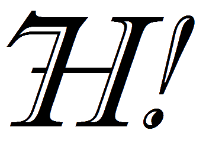

About This Project
This is a test website intended as a showcase for PDF Creation from predefined user templates. The project is designed to streamline the process of generating detailed inspection certificates for various equipment. Its primary purpose is to demonstrate the robust capabilities of dynamic PDF generation based on user-inputted data and pre-configured layouts.
Our Vision
We envision a world where engineers can effortlessly validate equipment, ensuring the highest standards of safety and operational integrity. This tool aims to provide a flexible and efficient solution for creating comprehensive and professional inspection documentation, minimizing manual errors and maximizing productivity.
Key Features
- Dynamic PDF Generation from user templates.
- Intuitive multi-step inspection form.
- Data validation to ensure accuracy.
- Attachment and deficiency tracking.
- Customizable report layouts.
Created by Hydra 7H!
